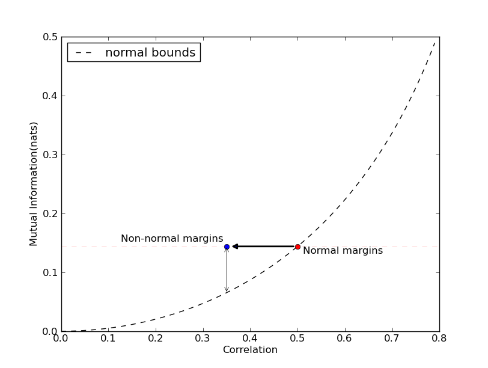
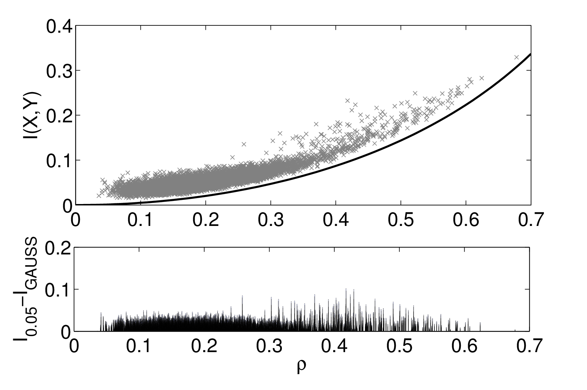
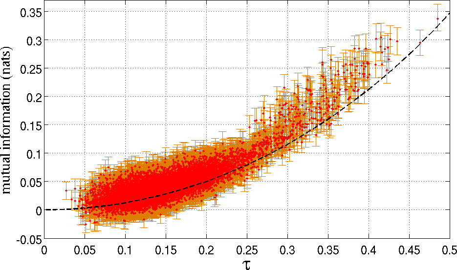
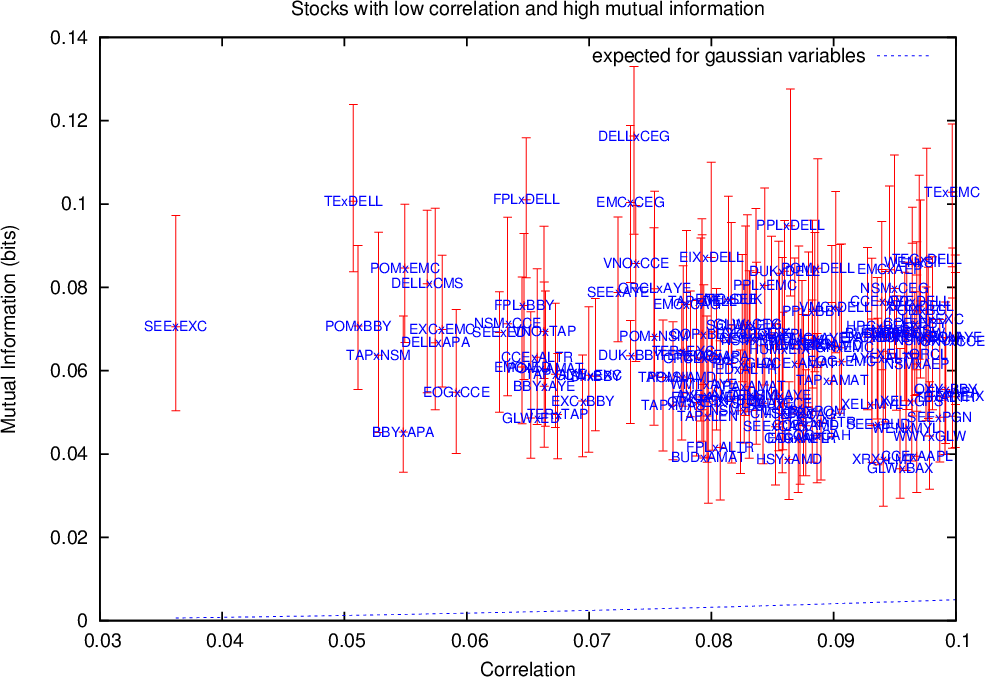
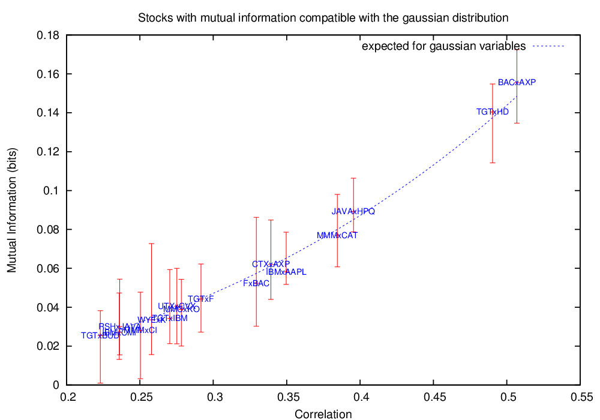

Your browser doesn't support the features required by impress.js, so you are presented with a simplified version of this presentation.
For the best experience please use the latest Chrome, Safari or Firefox browser.
Parte 1: Teoria de dependência estatística, Cópulas e teoria de informação
Rafael S. Calsaverini
Dependência estatística
- Independência estatística: $P(x,y) = P(x)P(y)$, ou: $$P(x|y) = P(x)$$
- Dependência completa: $P(x|y) = \delta(x - F(y))$
- É possível separar informação idiossincrática sobre cada variável da informação a respeito de sua dependência?
Correlação
- Módulo usualmente empregado como medida de dependência estatística.
$$|\mathrm{Corr}(X,Y)| = \left| \frac{E[XY] - E[X]E[Y]}{\sigma[X]\sigma[Y]}\right|$$
- Correlação é problemática:
- $\mathrm{Corr}(X,Y) \ne \mathrm{Corr}(f(X), g(Y)) $, em geral;
- $\mathrm{Corr}(X,Y) = 0$ não implica que $X$ e $Y$ sejam independentes;
- $\mathrm{Corr}(X,Y) = 1$ não implica que $X$ e $Y$ tenham dependência perfeita.
Medidas de dependência
- Desideratos para uma boa medida de dependência [1]:
- $M[X,Y]$ é um funcional da distribuição conjunta;
- $M[X,Y] = M[Y,X]$;
- $M[X,Y]$ é mínimo se $X$ e $Y$ independentes;
- $M[X,Y]$ é máximo $\Leftrightarrow$ $P(X|Y) = \delta(X - f(Y))$;
- $M[X,Y] = M[g(X), f(Y)]$ $\forall g, f$ monotônicas
- Se $X,Y \thicksim \mathrm{Normal}(\sigma_X, \sigma_Y, \rho)$, então $M[X,Y] = f(\rho)$
Medida de dependência
- Exemplos: $\tau$ de Kendall, $\rho$ de Spearman.
- $\small\tau = \mathrm{Prob}\left[(X - X')(Y-Y') > 0\right] - \mathrm{Prob}\left[(X - X')(Y-Y') < 0\right]$
- $\small\rho = \mathrm{Corr}(\mathrm{rank}(X), \mathrm{rank}(Y))$
Informação Mútua
Definição
- "Distância" [2] entre a distribuição conjunta e a variedade de distribuições fatoráveis
- Valor esperado da divergência KL entre a distribuição de $X$ e $X | Y = y$
- Valor esperado da redução na entropia de $X$ ao se obter o valor de $Y$
$$I(X,Y) = \int \mathrm{d}x\mathrm{d}y\; p(x,y) \log\frac{p(x,y)}{p(x)p(y)}$$
Para qualquer distribuição: $I(X,Y) \ge -\frac{1}{2} \log(1 - \mathrm{Corr}(X,Y)^2)$
Cópulas - Teorema de Sklar
Para toda distribuição cumulativa conjunta contínua de duas variáveis
$F_{X,Y}(x,y)$, com distribuições cumulativas $F_X(x)$ e $F_Y(y)$, existe
uma função cópula única $C(u, v)$ tal que:
$$F_{X,Y}(x,y) = C(F_X(x), F_Y(y))$$
- Exemplos
- Arquimedianas: $C(u,v) = \psi^{-1}(\psi(u) + \psi(v))$
- Normal: $ N_{\rho}(u,v) = \frac{1}{2\pi\sqrt{1 - \rho^2}}\int_{-\infty}^{\Phi^{-1}(u)} \int_{-\infty}^{\Phi^{-1}(v)} \mathrm{d} u \mathrm{d} v\; e^{-\frac{u^2 + v^2 - 2uv\rho}{2(1-\rho^2)}}$
- Densidade de cópula:
- $c(u,v)=\frac{\partial^2 C}{\partial u\partial v}$
- $p_{XY}(x,y)=c(F_X(x),F_Y(y))p_X(x)p_Y(y)$
Medidas de dependência revisitadas:
- Desideratos para uma boa medida de dependência:
- $M[X,Y]$ é um funcional da cópula, e não depende das distribuições marginais;
- $M[X,Y]$ é mínimo se $C(u,v) = uv$;
- $M[X,Y]$ é máximo se $C(u,v) = \max(0,u+v-1)$ ou $C(u,v)=\min(u,v)$, chamadas cópulas de Frechet-Hoeffding;
- Se $C(u,v) = N_\rho(u,v)$, então $M[X,Y] = f(\rho)$
- As exigências de Renyi [1959] são consequencia imediata das exigências acima.
Medidas de dependência e cópulas
Problemas com a Correlação
- $\mathrm{Corr}(X,Y)$ depende explicitamente das distribuições marginais
- $\mathrm{Corr}(X,Y)$ vs. $\rho$: correlação não é um bom estimador do parâmetro $\rho$.
- $\mathrm{Corr}(X,Y)$ pode subestimar grosseiramente a dependência.

Cópulas esféricas e elipticas
- Distribuição esféricas e elípticas:
- Distribuição $p(\vec{x})$ é esférica se $E\left[ e^{i\vec{k}\cdot\vec{x}}\right] = \psi\left(|k|^2/2\right)$
- Distribuição $p(\vec{y})$ é elíptica se $E\left[ e^{i\vec{k}\cdot\vec{y}}\right] = \psi\left(\frac{1}{2}\vec{k}\Sigma^T \vec{k}\right)$
- $\vec{X} \thicksim$ distribuição esférica $\Rightarrow \vec{Y} = A\vec{X} \thicksim$ distribuição elíptica,
- Proposição: Se $C(u,v | \Sigma)$ é cópula elíptica derivada da cópula esférica $C(u,v)$, então:
$$I[C(u,v|\Sigma)] = I_{0}(\Sigma) + I[C(u,v)]$$
onde $I_{0}(\Sigma) = -\frac{1}{2}\log\Sigma$ é a informação mútua de uma cópula normal com matriz de correlação $\Sigma$.
Excesso de Informação Mútua - teste de normalidade na dependência
- Parte gaussiana da dependência é associada a dependência linear.
- $I[X,Y] \ge -\frac{1}{2}\log(1 - \rho^2)$ para distribuições elípticas.
- $\tau$ de Kendall para distribuições elípticas $\rho = \sin\left(\frac{\pi\tau}{2}\right)$


Excesso de Informação Mútua - teste de normalidade na dependência
- Parte gaussiana da dependência é associada a dependência linear.
- $I[X,Y] \ge -\frac{1}{2}\log(1 - \rho^2)$ para distribuições elípticas.
- $\tau$ de Kendall para distribuições elípticas $\rho = \sin\left(\frac{\pi\tau}{2}\right)$


Ajuste de cópulas elípticas
- Método de ''moment matching'' via $\tau$ de Kendall e informação mútua
Parte 2: Um modelo para emergência de autoridade em sociedades humanas
Rafael S. Calsaverini
Comportamento igualitário vs. hierárquico
- Organização social - igualitária vs. autoritária
- Grandes primatas ((\text{Chimpanzés, Bonobos, Gorilas}))
- Diversidade de comportamentos social humano
- Origem da diversidade: ecológica vs. cultural.
Evidências empíricas - U-shaped evolution